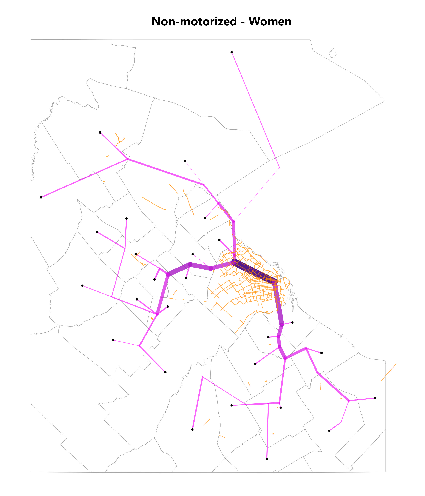
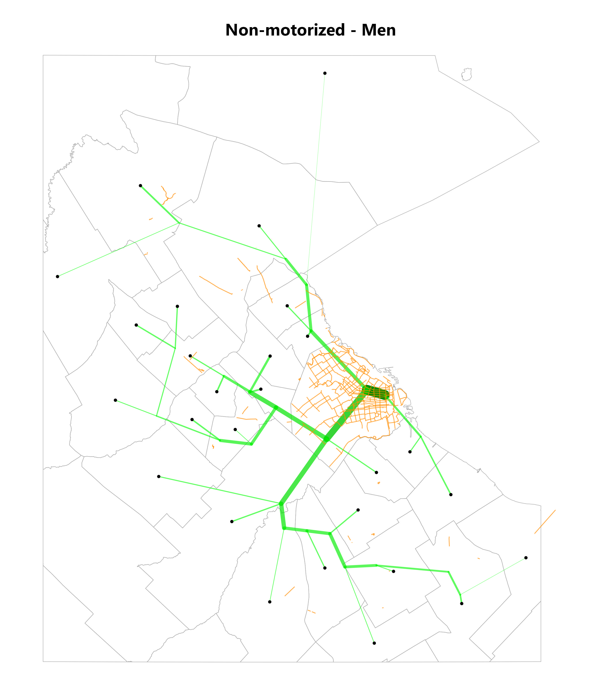

Insights de género y movilidad
Buenos Aires
Introducción
En el presente informe, se presentará un análisis detallado de los patrones de movilidad en la ciudad de Buenos Aires, Argentina, durante los últimos cuatro años, tomando en cuenta la variable de género. La información presentada ha sido recopilada por la consultora Nommon, quien ha realizado estudios exhaustivos sobre la movilidad en la ciudad en años anteriores.
El objetivo principal de este informe es analizar cómo las diferencias de género influyen en los patrones de movilidad en Buenos Aires, tomando en cuenta factores como los medios de transporte más utilizados, las distancias recorridas y las zonas más transitadas.
Se espera que los resultados de este estudio permitan a las autoridades y a los ciudadanos en general comprender mejor las necesidades y preferencias de movilidad de diferentes grupos de género, lo que podría contribuir a la creación de políticas públicas más inclusivas y equitativas.
Procesamiento
- Head de los datos
- Estructura
- Procesamiento ad-hoc
Desarrollo
Flujo de densidades de los viajes en la RMBA
Mediante los algoritmos establecidos en la matriz origen y destino, se pueden conocer los flujos de viajes más frecuentes según género y modo utilizado. En este caso, a la izquierda se representan los viajes en magnitud de mayor proporción de mujeres y a la derecha los viajes con más propensión a ser realizados por hombres. Estos gráficos representan información del año 2021.




Distribución de grupos de distancias medias según el total por género
- here goes text :) -
Distribución de destinos según la cantidad de mujeres que viajan cada región administrativa.
En proporción, las mujeres utilizan más transporte público en la zona norte de la Región Metropolitana de Buenos Aires, siendo wn el resto de las áreas más fuerte la presencia del automóvil privado derivado de falta de infraestructura de transporte correspondiente.

Distribución de los viajes según modo, género y jurisdicción.
Trips by mode, gender and year.
- c -